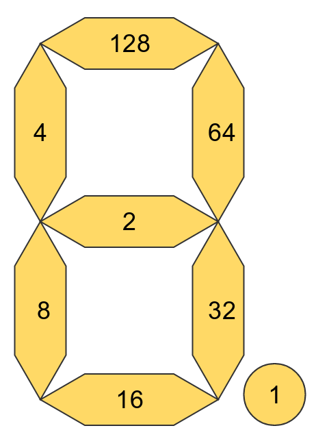

The Number display¶
Source code: blackpearl/things/hardware/outputs/number.py
How it works¶
The number display is capable of displaying 4 digits. Each digit can be followed by a decimal point (period), and it also has a colon between the second and third digit. It also has an “apostrophe”, which sits between digits 3 and 4 (I think this is really a period between digits 1 and 2 if you hold the display the other way up, but I’m just guessing!)
At the hardware level the display doesn’t accept numbers to display. Instead each bar that makes up a digit is assigned a value. Each one is a power of 2 (one of 1, 2, 4, 8, 16, 32, 64 and 128). This means that any combination of bars can be set by adding up the values assigned to the bars that you want turned on.
The diagram below shows how the Flotilla number display assigns those values:
So, for example, if you wanted to display the number 1 you would want the
two rightmost bars turned on, and all the others turned off. That would be
represented by 96, as that is 32 (bottom right) + 64 (top right).
Likewise the number 5 would be represented by 182, as that is 128 (top
bar) + 4 (top left) + 2 (middle bar) + 32 (bottom right) + 16
(bottom bar).
Luckily the Number Python code handily defines all of these for you, like
so:
NUM_DOT = 1
NUM_MID = 2
NUM_TL = 4
NUM_BL = 8
NUM_B = 16
NUM_BR = 32
NUM_TR = 64
NUM_T = 128
And handily defines the numbers 0 to 9, too:
NUMBERS = [
NUM_TL + NUM_BL + NUM_T + NUM_B + NUM_TR + NUM_BR, # 0
NUM_TR + NUM_BR, # 1
NUM_BL + NUM_T + NUM_B + NUM_TR + NUM_MID, # 2
NUM_T + NUM_B + NUM_TR + NUM_BR + NUM_MID, # 3
NUM_TR + NUM_TL + NUM_MID + NUM_BR, # 4
NUM_TL + NUM_BR + NUM_MID + NUM_T + NUM_B, # 5
NUM_T + NUM_MID + NUM_B + NUM_BL + NUM_BR + NUM_TL, # 6
NUM_T + NUM_TR + NUM_BR, # 7
NUM_TL + NUM_BL + NUM_T + NUM_B + NUM_TR + NUM_BR + NUM_MID, # 8
NUM_TL + NUM_T + NUM_TR + NUM_BR + NUM_MID # 9
]
This means that you can get the correct value for, say 9 by accessing
NUMBERS[9].
The Number class defines some useful methods and attributes to work with it
more easily.
Supported methods¶
-
.set_number(number, pad=None, precision='')¶ Pass a number in the range -999 to +9999 (including decimals) to this method and it will do its best to display that number on the display. The only mandatory parameter is the number that you want to display (which should be an
intor afloat, not a string).If the number you pass in has more than 4 digits (e.g.
123.456) the display will truncate it, showing the most significant digits (e.g.123.4).If the number takes less than all 4 digits you can pad the left of the display by passing in one of
-or0, and that character will be used to pad the left hand characters of the display.e.g.
number.set_number(9.3, pad="0")will display009.3If the number takes less than all 4 digits you can force the decimal point to the left and right pad with zeroes by setting
precisionto one of'0','00'or'000'. This is particularly helpful if you want a stopwatch or countdown timer where you are displaying tenths or hundredths of a second and you don’t want the decimal point jumping around).As with the rainbow you need to call
.update()after calling this method so that your changes are sent to the display. This allows you to construct more complex display configurations before sending everything at once.
-
.update()¶ Sends the current values to the display.
-
.set_value(posn, value)¶ This is at a lower level than
.set_number()above.posnis the digit you want to set (starting at 0, at the left, and going to 3, at the right) andvalueis a number between 0 and 255.valuewill set the bars as described in the diagrams above.As with
.set_number()you must call.update()for your changes to be sent to the display.
-
.set_digit(posn, digit)¶ As with
.set_value()posnis the digit you want to set.Just to confuse you this method accepts a
stringfordigitnot anint. The reason for this is that you can pass in'9.'and it will display the number 9 plus the decimal point.As with
.set_number()you must call.update()for your changes to be sent to the display.
-
.reset()¶ As you might expect, this resets the display and turns all bars, periods, colons and apostrophes off.
-
.colon¶ Set
.colontoTrueto turn the colon on. Set it toFalseto turn it off.As with
.set_number()you must call.update()for your changes to be sent to the display.
-
.apostrophe¶ Set
.apostrophetoTrueto turn the apostrophe on. Set it toFalseto turn it off.As with
.set_number()you must call.update()for your changes to be sent to the display.